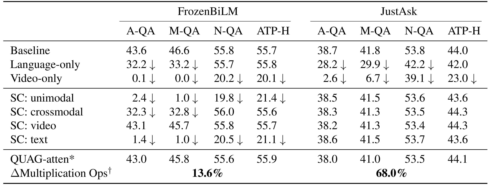
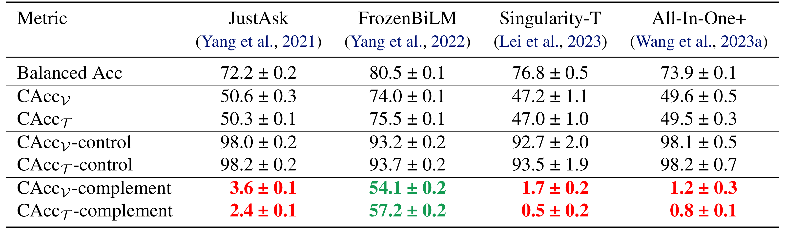

While VideoQA Transformer models demonstrate competitive performance on standard benchmarks, the reasons behind their success are not fully understood. Do these models capture the rich multimodal structures and dynamics from video and text jointly? Or are they achieving high scores by exploiting biases and spurious features?
Hence, to provide insights, we design QUAG (QUadrant AveraGe), a lightweight and non-parametric probe, to conduct dataset-model combined representation analysis by impairing modality fusion. We find that the models achieve high performance on many datasets without leveraging multimodal representations. To validate QUAG further, we design QUAG-attention, a less-expressive replacement of self-attention with restricted token interactions. Models with QUAG-attention achieve similar performance with significantly fewer multiplication operations without any finetuning. Our findings raise doubts about the current models' abilities to learn highly-coupled multimodal representations. Hence, we design the CLAVI (Complements in LAnguage and VIdeo) dataset, a stress-test dataset curated by augmenting real-world videos to have high modality coupling. Consistent with the findings of QUAG, we find that most of the models achieve near-trivial performance on CLAVI. This reasserts the limitations of current models for learning highly-coupled multimodal representations, that is not evaluated by the current datasets.
QUAG ablates specific modality interactions (viz. unimodal, crossmodal, text, and video) by replacing the attention score values with the respective row-wise average values. Consequently, the performance drop is used to quantify the reliance of a model on the specific interactions on that dataset, thus facilitating joint dataset-model analysis. For instance, for a given dataset, if the model heavily relies only on unimodal information, ablating the unimodal component of modality fusion should significantly decrease performance. Also, this decrease in performance should be more pronounced than the decrease from ablating the crossmodal component of attention. Therefore, performance drop is desirable.

We find that the JustAsk model does not learn to align and fuse the modalities. However, FrozenBiLM model consistently has strong reliance unimodal interactions and the text modality across the datasets but leverages cross-modal interactions only for ActivityNet-QA and MSRVTT-QA.
QUAG-attention averages the tokens before they are projected by the key matrix, hence reducing the number of multiplication operations. We provide more details in the main paper.
Inspired by Bagad et al., we developed CLAVI by modifying the sequence of events in video clips to enable isolated multimodal analysis. Unlike previous works, we incorporate both atemporal (existence-type) and temporal (before/after and beginning/end) question types, and propose consistent accuracy metrics for performance evaluation. Consequently, as illustrated in the figure, CLAVI comprehensively includes complements from both the language and video domains (question panels are colour-coded as per the correct answer; green:yes, red:no).
We find that while all the finetuned models are able to perform quite well on the easy multimodal instances, most of them have near-trivial performance on the difficult complement-subset.
@article{rawal2024dissect,
author = {Rawal, {Ishaan Singh} and Matyasko, Alexander and Jaiswal, Shantanu and Fernando, Basura and Tan, Cheston},
title = {{Dissecting Multimodality in VideoQA Transformer Models by Impairing Modality Fusion}},
booktitle = {International Conference on Machine Learning},
year = {2024},
organization = {PMLR}
}